Ready to Play (Catalogo)
I brani "Ready to Play" sono progettati per ensemble flessibili, eseguibili a vari livelli di difficoltà e strutturati per evitare "parti mancanti" anche in assenza di alcune sezioni.
Puoi trovarli su:
Per piccole indicazioni o chiarimenti post vendita, compila il modulo nella pagina Contatti.

Tailored Scores (Su Misura)
Se il brano che cerchi non è disponibile nella sezione Ready to Play, o se desideri un arrangiamento sviluppato per un organico specifico, puoi richiederlo qui. Puoi calcolare un preventivo indicativo nella pagina Preventivo e, se soddisfa le tue esigenze, richiedere l'arrangiamento inviando il modulo per farti ricontattare.
Gli arrangiamenti vengono consegnati tramite piattaforme autorizzate, rispettando tutti i requisiti di licenza.

Bespoke Scores (Esclusivi)
Collaborazione diretta con il compositore per lavori o progetti interamente personalizzati. Le opere rimangono esclusiva del cliente per un periodo concordato (i diritti morali restano al compositore). Può includere arrangiamenti o composizioni originali. I costi variano in base alla complessità e ai diritti d'autore; le composizioni originali sono quotate in base all'impegno richiesto.

Supporto Post-Acquisto
I Tailored Scores includono tre mesi di piccoli adattamenti interni e verifiche della notazione per ottimizzare l'esecuzione per il tuo ensemble.
I Bespoke Scores includono sei mesi di adattamenti e guida all'esecuzione per assistere il tuo ensemble nella preparazione.